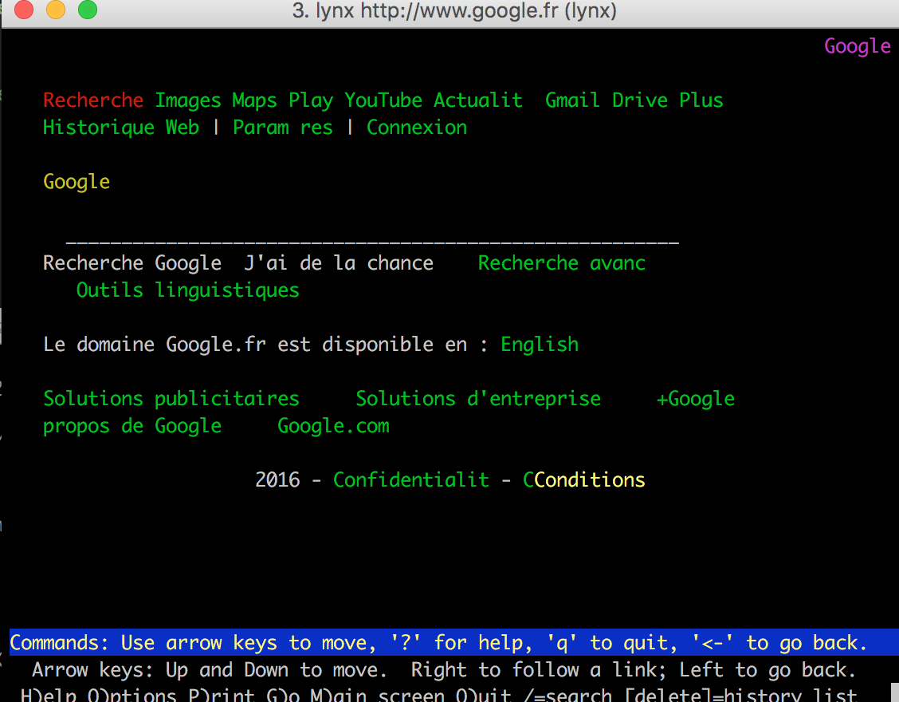
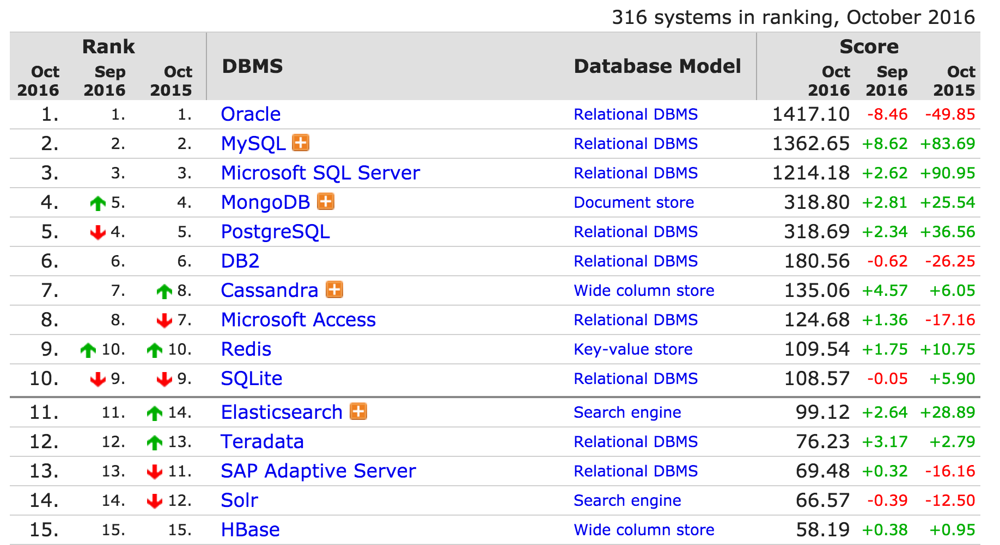
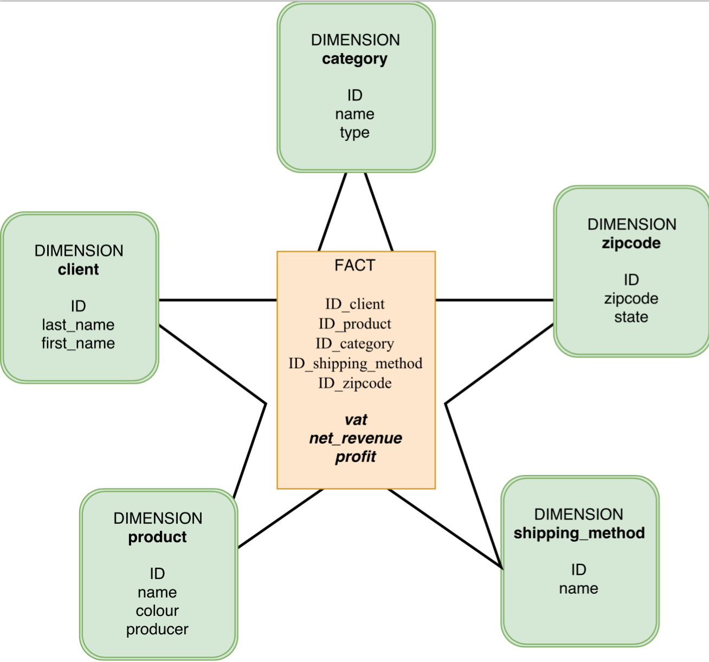
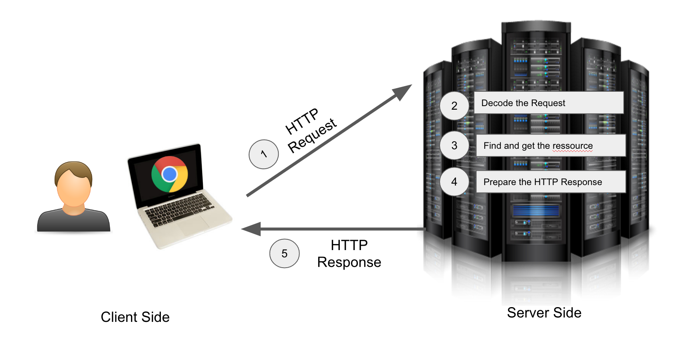
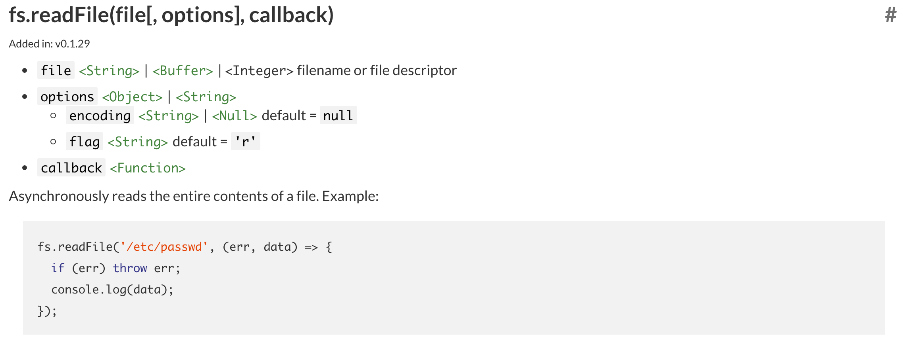

Un script “shell” est un programme écrit pour être exécuté via l’interpréteur de commande UNIX. Ces scripts sont facile à générer et suivent les patterns des langages de programmation communs. Ainsi on a la possibilité de créer des boucles et des structures conditionnelles par exemple.
Un script shell est dans les fait un fichier avec l’extension sh. On l’exécute en ouvrant cmd sous windows, ou le terminal sur macOS. La commande permettant d’executer un script shell est la suivante:
1
$ sh name_of_the_script.sh
NB : Par habitude on rajoute un sigle dollar devant la commande. Il s’agit juste d’une convention permettant d’indiquer au lecteur que cette commande doit être exécutée dans le terminal.
Itérer sur les lignes d’un fichier via shell
Afin de lire les lignes d’un fichier les unes des autres on peut utiliser la structure for. For indique à l’algorithme qu’il faut itérer pour chaque élément d’un input (ici l’ensemble des lignes de notre fichier) :
1
2
3
4
5
location_of_the_url_file = "./urls.txt"
for url in `cat $location_of_the_url_file `
{
echo $url
}
Dans un premier lieu on déclare la variable location_of_the_url_file qui stocke l’emplacement de notre fichier relativement à notre dossier de travail.
Dans un second temps on va récupérer l’ensemble des lignes de notre fichier via la commande :
1
`cat $location_of_the_url_file`
Récupérer le contenu d’une page web via wget
wget est un outil de téléchargement très puissant. On peut donc l’utiliser pour télécharger le contenu d’une page web directement depuis le terminal. Il faut d’abord bien s’assurer de l’avoir installer sur sa machine.
Si ce n’est pas le cas on peut utiliser la commande brew install wget. Homebrew est un gestionnaire de dépendance très pratique qui permet des installations rapides. Pour plus d’information voici la page : http://brew.sh/index_fr.html
1
wget -O ./pages/wiki.html $url
La commande suivante permet de télécharger la page dont l’url est $url et de stocker cette dernière dans le dossier pages sous le nom wiki.html. Le téléchargement dans un répertoire cible est géré par la commande -O.
Créer un dump en format plain text de notre page html grâce à lynx
Lynx est un outil permettant la manipulation de pages HTML. Il s’agit en fait d’un navigateur en mode ligne de commande. Une sorte de chrome version simplifiée.
Pour accéder à google depuis votre terminal :
1
lynx http://www.google.fr

On peut donc produire une version .txt de notre page
Cette version txt de nos pages web nous permettra de nous livrer à des analyses de type “NLP” (Natural Language Processing). Nous traiterons plus en détail cet aspect dans un prochain billet.
Un arbre de décision est une représentation visuelle d’un algorithme de classification de données suivant différents critères qu’on appellera décisions (ou noeuds). Voici un exemple :
Cet arbre de décision permet en fonction de quelques questions de déterminer si une banque doit prêter ou pas au client qui demande un prêt. Ce dernier est très simplifié mais la plupart des banques utilisent des systèmes similaires permettant aux agents une prise de décision experte.
Mais comment arrive t’on à de telles règles de décisions. Dans les faits il s’agit de synthétiser la connaissance et l’historique de l’ensemble des prêts accordés par la banque et de classer chacun de ces prêts selon qu’ils aient été remboursés sans incident ou pas. Il s’agit donc de trouver dans une énorme quantité de données les questions qu’il est judicieux de poser afin de prédire la qualité d’un emprunteur.
Vocabulaire
Nous allons détailler la construction d’un tel arbre de décision. Posons d’abord quelques mots de vocabulaire. On va classer des objets.
Chaque objet de la données historique (set d’entraînement) dispose d’une classe bien définie
Chaque objet (par exemple un prêt accordé à monsieur X) dispose de features, de propriétés bien définies elles aussi. Par exemple : la personne a qui on a accordé le prêt possédait-elle une maison, possédait elle un CDI ?
Chaque propriété ou feature a un ensemble de valeurs possibles. Par exemple (‘oui’ ou ‘non’)
Dans notre graphique représentant l’arbre de décision on a les éléments suivants :
Un noeud de décision (représenté par un rectangle) (on pose une question)
Un bloc de fin qui est représenté par un oval. (on a trouvé la classe)
Fonctionnement de l’algorithme : un exemple
Dans les faits on aura en entrée de notre algorithme une série de données qui représentera de nombreux objets (ici des prêts) ayant chacun un set de propriétés (ici : CDI oui ou Non, Locataire oui ou non …). Ces objets du set d’entrainement seront déjà classés (ex: Bon Emprunteur).Par exemple :
Notre algorithme va donc devoir choisir une première question à poser à notre candidat. Pour cela il doit choisir la feature (ou propriété) qui permet de découper nos prêts en deux sets les plus homogènes possibles, c’est à dire deux sets regroupant des prêts dont les emprunteurs sont en grande partie d’une même catégorie.
Par exemple l’algorithme va tester la feature CDI et va ensuite répartir les prêts dans deux set : les prêts fait par des personnes en CDI et les autres. Si dans un des set on trouve que des prêts ayant la même classe alors l’algorithme s’arrêtera pour cette branche. Par exemple si on constate que tous les gens qui n’ont pas de CDI sont des mauvais emprunteurs alors on peut s’arrêter là et dire à nos agents de ne plus prêter aux gens sans CDI.
Si on a pas obtenu un set composé de prêts qui ont la même classe après ce premier split, on va ensuite refaire le même travail pour les features suivantes. Nous allons sélectionner la feature permettant un classement le plus homogène possible… Ce processus est mené jusqu’à ce qu’o obtiennent des classes homogènes.
Overfitting et extraction de sens
Cet algorithme est peu gourmand en mémoire. Mais il y a un risque très important d’overfitting, c’est à dire que l’arbre n’est pas utilisable car il fournit des résultats très bon pour le set d’entraînement, mais utilisé en conditions réelles il classe très mal les nouveaux exemples. Pour cela on peut envisager d’avoir couper notre set d’entrainement en deux afin d’avoir un set de données permettant de valider si il y a overfitting ou pas.
Cet algorithme est très intéressant pour extraire de l’information d’une source de données obscure. Il permet d’isoler les propriétés ou features qui apportent le plus d’information pour déterminer la classe de chaque objet.
Application en NodeJS
Calcul de l’entropie de Shannon
Dans le paragraphe précédent nous disions qu’il fallait trouver la feature générant des classes qui sont les plus homogènes possibles. Mais comment définir cette homogénéité ?
Nous allons utiliser un résultat important de la théorie mathématique de l’information : l’entropie. Et plus particulièrement l’entropie de Shannon :
$H=-\sum_{i=1}^{n} P(x_{i})log_{2}(P(x_{i}) )$
L’entropie correspond au désordre. Plus on a de classes différentes dans un set de données plus l’entropie sera grande. De manière opposée si dans un set de données tous les objets ont la même classe, il n’y aura pas de désordre l’entropie sera nulle.
Dans les faits on va calculer l’entropie de la manière suivante en NodeJS :
1
2
3
4
5
6
7
8
9
10
11
12
13
14
15
16
17
18
19
20
21
22
23
24
25
26
27
28
29
30
31
32
33
34
35
36
37
38
39
40
41
42
43
44
45
46
47
48
49
50
51
52
53
54
55
56
57
58
59
60
61
var _ = require('lodash');
/**
* This function is used to compute the Shannon Entropy
* @method calculate_shannon_entropy
* @param {Array} data an array of data
* @return {Number} The Shannon Entropy
*/
var calculate_shannon_entropy=function(data){
// init the shannon Entropy
var shannon_entropy = 0;
// we get the number of entries in the array
var length_of_data = data.length;
// create an empty array to keep track of different labels
var labels_counter = {}
// we iterate through the array
_.forEach(data, function(value, key) {
// extract the label from the one data element
var label_extracted = value.label;
// check if this label is inside our label counter array
if (label_extracted in labels_counter){
// the element is inside our object increment its value
labels_counter[label_extracted] +=1
} else {
labels_counter[label_extracted] = 1
}
});
// We then iterate through our label counter object
_.forEach(labels_counter, function(value, key) {
// we get the frequency of the number of time a label occurs
var p = parseFloat(value/length_of_data)
// Caculate the entropy of a class and add it to the shannon_entropy variable
On prend donc la fréquence d’apparition de la classe bon_emprunteur et son log en base 2 auquel on va ajouter moins la fréquence d’apparition de la classe mauvais_emprunteur et son log en base 2 !
Il va falloir ensuite que l’on puisse éliminer des features au fur et à mesure que l’on split notre données au fil des blocs de décision. C’est l’objet de la partie suivante :
Création de la fonction permettant de partitionner un set de données en fonction d’une feature et de sa valeur
Notre mission ensuite est de préparer la fonction qui permet à partir d’un set de données d’entrainement de récupérer un set plus petit ne contenant plus que les objets disposant de cette feature dont la valeur est égale à une des valeurs possibles de la feature.
1
2
3
4
5
6
7
8
9
10
11
12
13
14
15
16
17
18
19
20
21
22
23
24
25
26
27
28
29
30
31
32
33
34
35
36
37
38
39
40
/**
* This function split our dataset and extract object that have the feature set to a specific value
* @method split_the_dataset_by_feature_and_value
* @param {Array of Object} data our dataset
* @param {String} feature the name of the feature
* @param {String or Number} value the value of the feature to extract from the dataset
* @return {Array of Object} value the dataset without the objects that have the feature "feature" set to the value "value" & without the feature "feature"
*/
var split_the_dataset_by_feature_and_value=function(data_set,feature,value){
// we partition our array in order to isolate in the data
// Objects that have the `feature` set to the right value
var data_set
var array_partitioned = _.filter(data_set, function(o) { return o[feature]==value; });
// we then have to remove the feature from our objects
Par exemple ici nous nous débarassons des objets dans notre set de données dont la feature has_a_house est différent de 0.
Maintenant attaquons nous au coeur du réacteur : nous devons trouver la meilleur feature, autrement dit celle qui génère le moins d’entropie (on parle aussi de gain informationnel maximal)…
Déterminer la feature dans un set de données générant un gain informationnel maximal
1
2
3
4
5
6
7
8
9
10
11
12
13
14
15
16
17
18
19
20
21
22
23
24
25
26
27
28
29
30
31
32
33
34
35
36
37
38
39
40
41
42
43
44
45
46
47
48
49
50
51
52
53
54
55
56
57
58
59
var _ = require('lodash');
var data_set_splitter = require('./data_set_splitter')
var shannon_entropy = require('./shannon_entropy')
/**
* This function will select the best feature for splittingwith the help
* of the shannon entropy
* @method get_the_best_feature_for_splitting
* @param {Array} data A dataset of training, an array conposed of object with a property "label" that represents the class
* @return {String} The name of the best feature for splitting (the property name)
*/
var get_the_best_feature_for_splitting= function(data){
// we compute the Entropy
var base_entropy_value = shannon_entropy.calculate_shannon_entropy(data)
// init a variable that will contain the best informational gain value
var best_informational_gain_value = 0
// init a variable that will contain the best feature choice for splitting
var best_feature_name = ""
// we iterate through our features (we take the first data element)
Cette fonction doit détecter quelle est la feature qui apporte un gain informationnel maximal. Nous cherchons en effet à trouver la feature permettant de diviser nos exemples dans des “compartiments”, “compartiments” qui doivent avoir la particularité de regrouper des exemples de classes similaires, et ce dans une proportion la plus importante possible. Ainsi nous réduisons le désordre.
Dans les faits nous allons faire usage du calcul de l’entropie de Shannon pour calculer cette notion de différentiel de désordre. Si on prend l’exemple de la feature has_a_car, on a donc deux valeurs possibles : vrai ou faux. Première étape : l’algorithme va donc générer un set de données ne contenant pas les exemples dont la has_a_car vaut vrai. On calcule ensuite le rapport entre le nombre d’éléments de notre nouveau set de données et le nombre d’élément que contient le set de données d’origine. On calcule ensuite l’entropie avec ce nouveau jeu de données. Ce processus est répété pour chaque valeur de la feature (donc 2 fois ici). On calcule ensuite pour chacune des feature le gain informationnel.
Ce dernier étant défini comme la différence entre l’entropie de base et la somme des entropies (pour chaque valeur de la feature). L’algorithme sélectionnera la feature qui permet d’obtenir le meilleur gain informationnel !
Construction de l’arbre de décisions de manière récursive
Il est temps de construire notre arbre. Nous allons le faire grâce à l’usage d’une fonction récursive, c’est à dire une fonction qui va elle même s’appeler au cours de son exécution. Pour plus d’informations sur la récursivité rendez-vous sur la page wikipédia : https://fr.wikipedia.org/wiki/Fonction_r%C3%A9cursive.
Lorsqu’on bâtit une fonction récursive il faut en premier lieu visualiser nos conditions de sorties. Nous allons donc itérer sur notre jeu de données d’entrainement afin à chaque fois de détecter la meilleur feature permettant de diviser notre jeu de données. Ainsi à chaque itération on isole la meilleure feature, on débarasse notre jeu de données de cette dernière. Cette meilleure feature sera donc une feuille de notre arbre. De cette feuille on aura autant de ramifications que de valeurs possibles à cette feature. Chaque feuille sera ensuite générée de suivant le même algorithme. Les conditions de sorties seront donc au nombre de deux :
Il ne reste plus de features dans le jeu de données
Il ne reste plus que des objets ayant tous la même classe.
Voici l’algorithme :
1
2
3
4
5
6
7
8
9
10
11
12
13
14
15
16
17
18
19
20
21
22
23
24
25
26
27
28
29
30
31
32
33
34
35
36
37
38
39
40
41
42
43
44
45
46
47
48
49
50
51
52
53
54
55
56
57
58
59
60
61
62
63
64
65
66
67
68
69
70
71
72
var _ = require('lodash');
var data_set_splitter = require('./data_set_splitter')
var best_feature_selector = require('./best_feature_selector')
var shannon_entropy = require('./shannon_entropy')
/**
* This method will generate a decision tree
* @method generate_decision_tree
* @param {Array of object} data The dataset
* @return {Object} The decision tree/ ex : {"has_a_car":{"yes":{"has_a_house":{"yes":"good_borrower","no":"bad_borrower"}},"no":"bad_borrower"}}
*/
var generate_decision_tree = function(data){
// Because we build a recursive function
// we have to set our stopping conditions at the
// top.
// group the dataset by label
var grouped_data_per_label = _.groupBy(data, function(o){
return o.label
});
// We stop when there are only elements of the same class
// inside the dataset
//
if(_.size(grouped_data_per_label)===1){
returnObject.keys(grouped_data_per_label)[0]
}
// If there is no more features to split
// The size of the first training is only 1 because
// there is just one property the class
// ex : data[0] = {"label":"good_borrower"}
if(_.size(data[0])===1){
return mostly_present_class(data)
}
// Get the best feature to split
var best_feature_for_splitting = best_feature_selector.get_the_best_feature_for_splitting(data)
// create the object decision tree
var decision_tree ={}
decision_tree[best_feature_for_splitting]={}
// we have then to extract the unique values of this feature in the dataset
// get unique values of this feature
var unique_values_of_best_feature = _.uniq(_.map(data, best_feature_for_splitting));
Lorsqu’on est amené à construire une application web on utilise en général le modèle relationnel (cette question ne se pose pas toutefois si on travaille avec une base de données de type NoSQL, comme MongoDB, Couchbase …). Nous utilisons tous finalement le modèle relationnel sans forcément en avoir conscience. Sa manière de fonctionner étant relativement naturelle. D’ailleurs si nous revenons une étape avant, on peut légitimement s’interroger sur ce qu’est un modèle de base de données… Il s’agit simplement de règles de construction et d’utilisation d’une base de données. Un modèle est en général très normé afin que l’architecture d’une base reste compréhensible même en cas de changement d’équipe.
Les bases de données avec des modèles relationnels sont encore largement utilisées :

Caractéristiques du modèle relationnel
Modéliser une donnée de façon relationnel revient à penser les données de son application sous forme d’une multitude d’objets qui disposent de relations permettant de les lier ensemble. La modélisation de la base de données amène à la génération d’un schéma de la base de données. Cette définition semble abstraite, prenons un exemple pour mieux la comprendre : le commerce électronique.
Pour un site e-commerce nous avons plusieurs objets : des clients, des commandes, des adresses, des produits, des fabricants. Ces objets disposent d’une multitude de liens entre eux. Par exemple un client dispose de plusieurs adresses, une commande de produits, un client de commandes … On voit aussi que si certains objets ont des relations multiples avec d’autres, on a aussi des relations uniques entre certains objets. Un produit à par exemple un seul et unique fabricant. Il ne peut en avoir deux…
Les différents types de relations
Ainsi les liens entre les objets sont de différents types :
1-n : ou encore relations un à plusieurs par exemple entre l’objet client et l’objet commande : un client peut avoir plusieurs commandes, mais une commande ne peut avoir qu’un seul client.
n-n : ou encore relations plusieurs à plusieurs : un produit peut avoir plusieurs couleurs et une couleur n’est pas spécifique à un produit. Il peut y avoir plus d’un produit de couleur X.
1-1 : ou encore les relations un à un par exemple si nous stockions les numéros de carte d’identité de nos clients. Un client ne peux avoir qu’un seul numéro de CNI et un numéro de CNI correspond à un unique client. Ce type de relation est toutefois extrêmement rare.
Tables et objets
Chaque famille d’objet est stocké dans une table. On a ainsi une table client, une table commande…
Chaque objet client dispose d’un clé primaire. Cette clé est un identifiant unique d’un objet particulier stocké dans la table. Cette clé unique permet ensuite de lier l’objet en question à un autre objet cible (par exemple une commande). Dans la table des commandes on trouvera une clé primaire (qui permet d’identifier formellement la commande), mais aussi une clé étrangèreclient qui permet de lier cette commande à un client.
Limites du modèle relationnel
Le type de modélisation relationnel est particulièrement efficace pour traiter les données provenant d’applications transactionnelles. Par exemple pour un site e-commerce l’utilisation d’une modélisation relationnelle est bien adapté. On parle de systèmes de type OLTP (OnLine Transaction Processing). Un système de facturation client est ainsi assez aisé à créer dans le cadre du paradigme relationnel : on aura la table client, la table facture, la table des acomptes…etc chacune étant reliée grâce aux clés primaires (d’un côté) et étrangères (de l’autre).
Le modèle multidimensionnel : des requêtes analytiques performantes et plus facile à écrire
Mais pourquoi donc aurait-on besoin d’ajouter un autre schéma ? La réponse est simple lorsque les bases relationnelles commencent à accumuler un volume de données important le temps nécessaires aux requêtes analytiques augmente significativement. Précisons bien d’emblé que seules les requêtes analytiques sont concernées. Par exemple voiloir calculer un taux de rétention sur une table regroupant l’ensemble des activités des utilisateurs peut s’avérer très couteux en temps de calcul.
Le modèle multidimensionnel permet aussi de réduire la difficulté d’écriture des requêtes qui dans le cadre des bases classiques peuvent vite devenir illisible. Et qui dit illisible, dit temps perdu par le développeur ! Ainsi on peut interroger plus facilement ces modèles tout en ayant des temps de réponses bien meilleurs.
Comparaison des requêtes SQL & MDX
Par exemple dans le cas d’un modèle relationnel (en supposant un schéma permettant cette requête); pour avoir le nombre distinct de commandes d’un produit de la catégorie X par client on pourrait avoir une requête comme suis :
-- Obtention de l'information produit à partir de la table order detail
INNERJOIN product p ON od.product_id = p.id
-- Obtention de la catégorie
INNERJOINcategory c ON p.category_id = c.id
-- Obtention de la commande pour avoir le client
INNERJOINorder o ON od.order_id = o.id
-- Obtention de la données client (pour pouvoir afficher la data par client)
INNERJOINclient c ON o.client_id = c.id
-- Nous ne souhaitons que les produits d'id X
WHERE c.name = 'X'
-- On groupe les résultats par client
GROUPBY c.first_name+' '+c.last_name
On est obligé de faire une jointure sur plusieurs tables et la requête devient assez longue et peu élégante, de suite elle est plus complexe à débugger. Tandis qu’on aura une version plus courte de la requête avec l’aide du MDX (un simili SQL qui permet d’interroger des bases multidimensionnelles de manière plus simple) :
1
2
3
4
SELECT [Measures].[Orders Count] ONCOLUMNS,
[Customer].[Customer].Members ONROWS
FROM [Data Warehouse project]
WHERE [Product].[Product Categories].[Category].[X]
Beaucoup plus simple et lisible !
Dimensions, faits et mesures : le modèle en étoile
Voici un modèle d’organisation multidimensionnel (aussi appelé OLAP) :

On voit donc qu’on organise la données en pensant d’abord aux analyses qui vont y être faite. Ici on veut pouvoir comprendre la répartition du profit et du revenu net en fonction du produit, du client, de la catégorie, du code postal de livraison, de la méthode de livraison ! On va donc créer nos dimensions d’analyse : on aura donc 5 dimensions. Ce qui se manifestera dans le schéma par 5 tables de dimensions.
A ces 5 tables de dimensions on ajoute une table centrale, qui est la table de fait (fact table). Cette table de fait va regrouper les clés étrangères des tables de dimensions (ID_client, ID_product, …) mais aussi nos mesures(ou metrics) : ici le profit, le revenu net et la TVA.
On voit donc bien maintenant pourquoi il s’agit d’un modèle en étoile. Les dimensions ne sont pas liées entre elles et c’est la table de fait qui fait le lien entre les mesures et l’ensemble des dimensions !
Les métiers peuvent interroger directement les bases !
Par la suite on peut donner la possibilité au métier d’interroger directement la base afin de faire des analyses à volonté à partir de ces dimensions. De nombreuses solutions d’interrogations existent. L’une de mes préférée est Saiku (http://www.meteorite.bi/) qui dispose d’une version open source ! Les métiers peuvent générer des tableaux à la volée en couplant les dimensions, sans avoir à maitriser le MDX !
Le modèle dispose encore de bien d’autres avantages et caractéristiques, j’essayerai ‘écrire à nouveau sur ce sujet passionnant.
Ces commandes permettent de télécharger le fichier .phar. (Un fichier .PHAR est une PHP Archive, une application PHP compactée dans un seul et même fichier). Elles permettent ensuite d’étendre le niveau des droits sur ce dernier fichier (lecture, écriture, exécution). Nous déplaçons ensuite phpunit.phar dans le dossier /usr/local/bin/phpunit afin que nous puissions l’exécuter directement depuis notre terminal via la commande phpunit.
Création du fichier phpunit.xml contenant l’ensemble des variables d’environnement
Si vos scripts PHP font usage de variables d’environnement. Vous vous devez de fournir une valeur à ces variables dans vos tests unitaires. En effet si vous exécutez vos tests unitaires sans ces variables définies vos test échoueront, faute de variables définies.
PHPUnit permet la configuration de ces variables de manière très simple. Il vous suffit de créer un fichier nommé phpunit.xml à la racine du dossier de votre application :
1
2
3
4
5
6
7
8
9
<phpunitbootstrap="bootstrap_file.php">
<php>
<envname="DB_HOST"value="127.0.0.1:3306"/>
<envname="DB_USER"value="root"/>
<envname="DB_PASS"value="root"/>
...
</php>
</phpunit>
Dans notre cas nous définissons ici 3 variables d’environnement nommées DB_HOST, DB_USER et DB_PASS ayant respectivement les valeurs 127.0.0.1:3306, root, root.
D’autre part dans ce fichier de configuration est aussi définit un fichier de bootstrap qui va nous permettre de créer une procédure de démarrage spécifique au test de notre application.
Création du script de bootstrap.
Notre script de bootstrap devra effectuer une tâche :
Charger l’ensemble des classes que nous avons développées afin que nous n’ayons pas à faire des require dans chaque fichier décrivant un test unitaire. Cette astuce permet de gagner un temps précieux !
1
2
3
4
5
6
7
8
<?php
functionmy_autoloader($class){
include'classes/' . $class . '.php';
}
spl_autoload_register('my_autoloader');
?>
Si toutes vos classes sont regroupées dans le dossier classes (sans sous-dossiers) situé à la racine de votre application vous pouvez adopter cet autoloader simple. Une autre contrainte est que le nom de vos classes doit correspondre trait pour trait au nom du fichier dans lesquels elles sont définies.
Et voilà. Vous pouvez tester des fonctions disposant de variables d'environnement et tester toutes vos classes sans avoir à penser à appeler require à chaque utilisation d’une nouvelle classe.
HTTP signifie (Hypertext Transfer Protocol), il s’agit d’un protocole de communication entre ordinateurs connectés au réseau internet*. Lorsque nous échangeons avec nos semblables nous utilisons nous même un protocole de communication : il s’agit de notre langue et de notre grammaire. L’Internet dispose aussi d’un langage et d’une grammaire bien déterminée et il s’agit d’HTTP.
Contrairement au français ou comprendre et apprendre la grammaire nécessite un apprentissage long et douloureux, la grammaire du web est définit sous forme de RFC (“request for comments”), il s’agit d’une pléthore de documents décrivant les règles de fonctionnement de notre web. Plus précisément, c’est la RFC 2616 qui définit le fonctionnement du protocole HTTP version 1.1.
Client et Serveur

Sur le schéma précédent nous voyons que les requêtes HTTP sont émises depuis le client. Le client est dans ce cas le navigateur web utilisé (ici Chrome). Ce dernier va envoyer au serveur la requête HTTP (la question). Ce dernier va ensuite traité la requête et renvoyer la ressource correspondante au client.
Les principales caractéristiques du protocole
Les échanges du protocoles HTTP repose sur TCP/IP qui est une suite de protocoles destinés au transfert de données sur le réseau internet.
On peut transférer via HTTP n’importe quel type de média ! Que cela soit du texte, du HTML, du JSON, des images, des films (pensez aux sites de streaming qui reposent grandement sur HTTP).
Le protocole HTTP est sans état, c’est à dire que le serveur ne se souviendra pas de vous entre vos requêtes, d’une certaine façon HTTP n’a pas de mémoire. Et cela lui va très bien (cf REST)
Visualisation d’une requête HTTP
Comment peut on visualiser une requête HTTP dans Chrome ? Rien de plus simple il suffit de :
Cliquer sur Afficher
Puis sur Options pour les développeurs
Puis cliquez sur outil de développement
Vous verrez s’afficher la fenêtre vous permettant de surveiller l’activité de networking de votre navigateur, autrement dit toutes les requêtes qui sortent de votre machine :
Nous voyons donc ici toutes les requêtes lancées par chrome à la visite du site Le Monde. Et cela en fait un sacré paquet ! En effet les éléments du site sont chargés via HTTP. Souvenez vous, ce protocole est multimédia ! On va y recourir (enfin notre navigateur) pour charger les images, les feuilles de style CSS, les pages HTML, le favicon…
Voici un exemple de requête HTTP.
1
2
Request URL:http://www.lemonde.fr/
Request Method:GET
L’URL permet de router notre requête vers le serveur correspondant au site web sur le réseau. Ensuite on précise la méthode, ici il s’agit de GET. La méthode GET est surtout celle utilisée pour charger les images et les pages HTML. Il existe d’autres méthodes, appelées aussi verbes comme POST qui est utilisée notamment pour envoyer les données d’un formulaire sur un serveur. (par exemple pour envoyer votre formulaire d’inscription à Airbnb).
Mais une requête HTTP est aussi composée d’un header dont voici un exemple :
1
2
3
4
5
6
7
8
9
10
11
GET / HTTP/1.1
Host: www.lemonde.fr
Connection: keep-alive
Cache-Control: max-age=0
Upgrade-Insecure-Requests: 1
User-Agent: Mozilla/5.0 (Macintosh; Intel Mac OS X 10_11_4) AppleWebKit/537.36 (KHTML, like Gecko) Chrome/54.0.2840.34 Safari/537.36
Chaque ligne est générée par notre client (notre navigateur web). D’un point de vue développeur il ne faut d’ailleurs jamais se fier au header car ces données peuvent être manipulées avant d’être envoyées et changées à volonté par n’importe quel développeur.
Voici le détail du header avec des explications pour chaque donnée
Propriété
Description
Exemple
Host
Il s’agit du nom de domaine du serveur auquel on envoie la requête, on pécise aussi le port si celui-ci n’est pas 80
www.lemonde.fr
Connection
Il s’agit du comportement de la connexion. Ici on va garder la connection TCP ouverte entre le moment entre les requêtes réponses, au lien d’en ouvrir une autre à chaque reprise
keep-alive
Cache-Control
Cette propriété indique au cache du serveur s’il doit recharger la page à chaque reprise ou suivant un délai précis. Ici c’est le cas, on doit recharger à chaque fois la page
max-age=0
Upgrade-Insecure-Requests
Indique au client que l’on préfèrera toujours une reconnection HTTPS si jamais celui-ci est en train de migrer entre HTTP et HTTPS
1
User-Agent
Il s’agit de la chaine de caractère permettant d’identifier formellement le navigateur qui a généré la requête; on y trouve sa version son développeur … Renseignement très intéressant pour le web analytics
Mozilla/5.0 (Macintosh; ….
Accept
Indique le type de contenu (de média) que le client est en mesure d’accepter.
Indique la page d’où vient le visiteur. (très utile pour l’analyse de la provenance des visiteurs). Vous noterez la coquille (il manque un r) qui provient directement d’une erreur sur la RFC :)
Spécifie le type de compression du contenu que le client (le navigateur) peut traiter. Le contenu est en effet souvent compresser pour optimiser le temps de transfert !
gzip, deflate, sdch
Accept-Language
Spécifie quel langage le client accepte
fr-FR,fr;q=0.8,en-US;q=0.6,en;q=0.4
Cookie
On retrouve ici le cookie (une série de données) qui avait été précédemment enregistré sur le navigateur de l’utilisateur et qui est renvoyé au serveur lors de chaque requêtes. On retrouve d’ailleurs ici des traces de Google Analytics
Permet au serveur de renvoyer la réponse “304 Not modified” si jamais la page n’a pas été modifiée depuis la date indiquée
Fri, 30 Sep 2016 16:16:34 GMT
Précisons d’ailleurs que l’on peut mettre en place un système d’authentification utilisateur via les headers HTTP ! Le client rajoute simplement dans sa requête le nom d’utilisateur et le mot de passe demandé à l’utilisateur via une fenêtre native. Ce nom d’utilisateur est de mot de passe est encodé en base 64
1
Authorization: Basic XXXXXXXXXXXX
XXXXXXXXXXXX représentant l’encodage de la chaine nom_de_l_utilisateur : mot_de_passe ! Remarquez aussi que lorsque vous transmettez des données sensibles sur vos sites favoris et que ces derniers n’utilisent pas HTTPS (la version sécurisée du protocole HTTP) cela représente un réel danger, car toute requête peut être interceptée ! et dans une requête POST de transmission de formulaire vos données sont lisibles! Faites l’essai en essayant de remplir un formulaire et en surveillant la requête HTTP qui sera émise !
J’espère que vous aurez maintenant envie d’ouvrir votre inspecteur chrome afin d’inspecter les requêtes que fait votre navigateur ! Cela peut être un moyen intéressant pour découvrir tous les services qu’un site utilise (par exemple les réseaux de pubilicités, les services de web analytics…). Fouillez !
Un classifieur rapide et économe en puissance de calcul
Qu’est ce qu’un classifieur ?
Un classifieur est un algorithme permettant de définir la classe d’un objet suivant certaines de ses propriétés. Pour bâtir notre classifieur nous avons à notre disposition un ensemble d’objets dont on connait la classe par avance. Ce set d’objet est appelé set d’entrainement.
Par exemple, nous souhaitons classé des textes selon deux classes : écrit scientifique OU écrit romanesque (classification appelée binaire car composée de deux classes). Nous aurons donc à notre disposition un ensemble composé de 20 textes dont 12 classés “écrit romanesque” et les autres classés “écrit scientifique”.
Notre problème va donc consister à classer un nouveau texte en fonction de son contenu dans ces deux classes.
Utilisation de la théorie des probabilités
Notre algorithme aura la lourde tâche de fournir une classe à notre nouveau texte. Notre approche dans le cas de la classification naïve Bayesienne va être probabiliste. Nous allons chercher à déterminer la probabilité que notre objet appartient à la classe “écrit romanesque” à la probabilité que notre écrit appartient à l’autre classe. Nous allons ensuite comparer ces deux probabilités pour sélectionner la plus grande des deux.
Trouver la classe revient donc à calculer deux grandeurs et les comparer. Ce qui si on compare à l’algorithme des K voisins les plus proches (voir l’article ici) est très économe en calculs. Avant d’étudier plus en détail d’algorithme nous nous devons de faire un rappel sur les probabilités conditionnelles, qui constituent le fer de lance de cet algorithme.
Un passage obligé par les probabilités conditionnelles
La probabilité d’un événement A est un nombre variant entre 0 et 1 qui traduit le degrés de chance qu’un évènement A se produise. Plus on s’approche de la valeur 1 plus cet événement aura de chance de se dérouler.
Par exemple si on prend l’événement A “une élection va se dérouler en 2017”. La probabilité de cet événement est de 1 car il s’agit d’un événement certain.
Une probabilité conditionnelle est légèrement plus complète dans le sens où elle intègre dans son calcul un autre évènement. Ainsi une probabilité conditionnelle traduit le degrés de chance qu’un élément se produise sachant qu’un autre évènement s’est produit.
Par exemple, si on prend l’évènement A “réussite d’un test de maths”. L’évènement B “être mathématicien” et l’évènement C “avoir suivi un cursus scolaire littéraire”. Alors la probabilité de A sachant l’évènement B sera plus importante que la probabilité de A sachant l’événement C.
Mathématiquement on note une probabilité conditionnelle de deux façons :
$P_{B}(A) = P(A | B)$
La formule des probabilités conditionnelles se calcul ainsi :
$P_{B}(A) = P(A | B) = \frac{P(A \cap B)}{P(B)}$
La formule de Bayes
Fonctionnement théorique
Prenons un exemple afin de comprendre de quoi il en retourne. Imaginons un hôpital dans lequel on fait passer un test de dépistage de la tuberculose à certains patients. Les médecins dispose de données permettant d’établir que la fiabilité de ce test est de 90%, c’est à dire que 90% des tests sont fiables (les patients sont vraiment malades), il reste que 10% des tests sont des faux-positifs ou des faux-négatifs (le patient est bien malade mais dispose d’un test lui indiquant le contraire).
La formule de Bayes pourra nous donner la réponse à la question suivante : “sachant que le test de M.X est positif quel est la probabilité que celui-ci ne soit pas malade ?” On cherche donc à remonter dans le temps…
La formule de Bayes est définie ainsi : $P_{B}(A) = \frac{P_{A}(B).P(A)}{P(B)}$
Si on n’applique la formule à notre exemple on aura :
A : Ne pas être malade
B : Avoir un résultat de test positif
Ainsi la probabilité de ne pas être malade sachant qu’on a un test de dépistage positif est le rapportentre la probabilité d’avoir un résultat positif sachant qu’on est malade multiplié par la probabilité de ne pas être malade et la probabilité d’avoir un résultat de test positif.
Application à un problème de classification
On va chercher dans notre cas la probabilité qu’un objet appartient à la classe i sachant qu’il a les propriétés x et y. Soit :
$P_{x,y}(C_i)$
Si on a deux classes (1 et 2) dans notre problème nous allons donc comparer deux grandeurs :
$P_{x,y}(C_1) et P_{x,y}(C_2)$
Dans tous les cas nous devrons isoler des features, des propriétés relatives aux objets que nous souhaitons classer. Si nous souhaitons donc classer un document nous prendons par exemple 1000 propriétés correspondant chacune à la présence ou non d’un mot courant dans le texte.
Pourquoi cet algorithme est-il naïf ?
Nous faisons deux assomptions un peu naïves sur notre données :
Les features ou les propriétés sont indépendantes les unes des autres. Or c’est rarement le cas, si on prend les classifications de textes la présence d’un mot peut être lié à la présence d’un autre mot !
On fait aussi le postulat que les features sont d’importances équivalentes dans la tâche de classification, ce qui n’est encore pas vraiment le cas. Pour certains textes la présence d’un mot ou d’un groupe de mot est très signifiant dans leur classe.
Application en NodeJS via le module “bayes”
Nous allons créer un script permettant de classer des phrases selon deux classes : les phrases provenant de romans et ceux d’écrits scientifiques.
Créez un nouveau dossier nommé bayes_classifier
1
$ mkdir bayes_classifier
Placez vous dans ce dossier
1
$ cd bayes_classifier
Initialisez npm
1
$ npm init
Après avoir répondu à l’ensemble des questions installez le module bayes
1
$ npm install bayes --save
Créez un nouveau fichier index.js
1
$ touch index.js
Dans ce fichier faites un require du module bayes.
1
2
var bayes = require('bayes')
var classifier = bayes()
Nous allons ensuite entrainer notre modèle pour reconnaître les écrits romanesques (fiction):
1
2
3
4
5
6
7
8
9
10
11
12
13
// Make the algorithm learn the training data
// The Great Gatsby
classifier.learn('Il me sourit avec une sorte de complicité - qui allait au-delà de la complicité.', 'fiction')
// 1984 (Orwell)
classifier.learn('Celui qui a le contrôle du passé, disait le slogan du Parti, a le contrôle du futur. Celui qui a le contrôle du présent a le contrôle du passé.', 'fiction')
// Le dernier Jour d'un Condamné (Hugo)
classifier.learn('Maintenant je suis captif. Mon corps est aux fers dans un cachot, mon esprit est en prison dans une idée.','fiction')
// Guerre et Paix (Tolstoï)
classifier.learn('Oui, ils m ont accablé de reproches là-bas, et pour la guerre et pour la paix...','fiction')
// Les Caractères (La Bruyères)
classifier.learn('on n aime qu une seule fois : c est la première ; les amours qui suivent sont moins involontaires.','fiction')
// O.Wilde
classifier.learn("S'aimer soi-même, c'est l'assurance d'une longue histoire d'amour.","fiction")
Entrainons le maintenant pour reconnaître des écrits scientifiques (science):
1
2
3
4
5
6
7
8
9
10
11
12
13
14
15
16
/**
* MAKE IT LEARN SCIENCE...
*/
//La sensibilité de l'activité mathématique aux ostensifs, BOSCH M. ; CHEVALLARD Y. ;
classifier.learn('Les écritures, symboles, mots, discours, graphismes et gestes mobilisés dans l activité mathématique - soit ce que nous appelons, pour leur caractère matériel et perceptible, les objets ostensifs','science')
classifier.learn("De nouvelles observations suggèrent que des geysers de vapeur d’eau jaillissent du pôle Sud de la lune glacée de Jupiter.","science")
// pourlascience
classifier.learn("La pédagogie haptique rend l'élève acteur de son enseignement. Il est alors plus réceptif aux connaissances qu'on veut lui transmettre.","science")
classifier.learn("La méthode est fondée sur une approche distributionnelle de la sémantique. Les classes sémantiques qu'il est possible d'apprendre à partir d'un corpus analysé","science")
// https://hal.archives-ouvertes.fr/tel-00145147/
classifier.learn("Le panorama du Traitement Automatique des Langues est dominé par deux familles d'approches~: dans la première, la connaissance linguistique s'exprime sous forme de règles (grammaticales pour le traitement syntaxique, d'inférence pour le traitement sémantique, etc.)","science")
classifier.learn(" Les outils disponibles de recherche d’information sur le Web ont une approche généraliste, ne prenant pas en compte les caractéristiques de l’utilisateur, ce qui limite la qualité des résultats","science")
Maintenant nous allons tester notre modèle avec deux exemples non classés.
1
2
3
4
5
6
// test the classifier
var f = classifier.categorize("Je la contemplai avec une haine intense, celle qu'un cheveu seul sépare de l'amour ardent.")
var s = classifier.categorize(" Par ailleurs la réalisation d’un système de ce type exige un assemblage de plusieurs techniques utilisées en apprentissage ou en recherche d’information ")
L’algorithme des K voisins les plus proches repose sur la notion de distance entre des éléments classifiés et des nouveaux éléments à classer. La tâche principale de cet algorithme est de pouvoir prévoir une catégorisation d’un objet à partir d’objets dont on connait la déjà la catégorie.
L’idée est de décortiquer nos objets suivants des propriétés nominales ou numériques et pour classer un nouvel objet, il suffit d’identifier les éléments les plus proches, les plus semblables. C’est pourquoi on parle de voisins. La lettre K fait quand à elle référence au nombre de voisins que l’on doit étudier pour déterminer la classe.
Si in prends par exemple la classification de détection de la musique électronique, dont le but serait d’identifier les morceaux de musique électronique et ceux qui ne le sont pas. On pourrait imaginer un algorithme étudiant le tempo et le nombre de mots chantés par l’artiste. On aurait déjà une centaine de morceaux étudiés et classé. Lorsqu’on veut classer un nouveau morceau il suffirait de regarder ces deux indicateurs pour déterminer une ressemblance avec l’ensemble des morceaux déjà catégorisés…
Un exemple !
Pour bien comprendre notre algo nous allons prendre un exemple réel, celui de l’immobilier. Imaginons une agence pourvue d’un jeune stagiaire qui souhaiterait prédire le temps de vente d’un bien.
Toute chose égales par ailleurs il pourrait considérer deux facteurs : le nombre de parcs publics présents à moins de 20 min à pied du logement et le nombre de pièces.
Donnée d’entrainement
Ce dernier va donc constituer un set de données d’entrainement avec l’ensemble des transactions de son agence. Chaque bien est donc classé en deux catégories : ceux qui se sont vendus rapidement et ceux qui ont nécessité un temps plus important pour être cédés.
Tout le bureau est excité, on rentre un nouvel appartement (2 pièces, et 2 parcs à proximité) ! Chacun y va de son pronostique, mais notre stagiaire a une méthode secrète :
Il va donc déterminer la distance de ce nouveau bien avec chacun des biens déjà vendus et il va déduire des trois biens les plus proches pour savoir ce qu’il en sera de ce bien.
L’algorithme va donc consister à un calcul de distance puis on va sélectionner la classe dominante parmi les 3 classes des 3 voisins les plus proches.
Mise en pratique avec Nodejs
1
2
3
4
5
6
7
8
9
10
11
12
13
14
15
16
17
18
19
20
21
22
23
24
25
26
27
28
29
30
31
32
33
34
35
36
37
38
39
40
41
42
43
44
45
46
47
48
49
50
51
52
53
54
55
56
57
58
59
60
61
62
63
64
65
66
67
68
69
70
71
72
73
// nous ferons grand usage du module
// lodash qui est bien pratique lorsqu'on
// travaille sur des tableaux avec nodejs (https://lodash.com/)
var _ = require('lodash')
// On crée une variable data contenant un Array de l'ensemble de nos
// appartements déjas vendus dans le passé (cahcun des apprt est dans un sous tableau,
// le premier chiffre présentant le nombre de pièces, le second le nombre de parcs)
var data_training = [[1,2],[2,3],[1,1],[3,0],[1,1]];
// Pour chaque élément de notre tableau on associe une étiquette
var labels = ["vendu", "non_vendu","non_vendu","vendu","vendu"]
//Partie 2 : Notre élément à classer
// 2 pièces, 2 parcs à proximité (l'ordre est capital !)
var element_to_class = [2,2]
// on crée un array vide
// pour contenir l'ensemble de nos résultats de cacul de distance
console.log("Ce bien ne sera pas vendu rapidement");
}
Pour pouvoir exécuter ce code :
Créez un dossier sur votre ordinateur (p.ex immobilier)
Ouvres un terminal et déplacez vous avec la commande cd (change directory)
1
$ cd immobilier
Installez lodash (via npm qu’il faut d’abord initialiser)
1
2
$ npm init
$ npm install lodash --save
Créez votre fichier index.js (soit directement via le terminal ou bien avec votre éditeur de code préféré). Ce dernier contiendra le code
1
$ touch index.js
Copiez le code précédent.
Lancez l’algorithme !
1
$ node index.js
Pour bien comprendre je vous invite à reprendre ligne par ligne et d’essayer de le réécrire à votre sauce (l’utilisation de lodash (https://lodash.com/) n’est pas obligatoire mais très conseillée)
On a souvent tendance à limiter l’API aux applications web, mais ces dernières sont définies et utilisées au sein de presque tous les langages, applications elles supportent même la programmation et le design d’interface pour le hardware.
API signifie “Application programming interface”, littéralement il s’agit d’une boite à outils contenants l’ensemble du matériel nécessaire pour bâtir un logiciel. Il s’agit de l’ensemble des blocs de construction permettant aux développeurs de bâtir un nouveau logiciel sur une base existante, cette base existante de fonctionnalités étant mise à la disposition du développeur via l’API.
Les API sont protéiformes, elles sont mises à disposition par les langages de programmation. Par exemple NodeJS fournit au développeur un ensemble de méthodes et de fonctions pré codées lui permettant de bâtir des programmes sans avoir à réinventer la roue à chaque reprise.
Prenons l’exemple simple d’un programme que nous souhaiterions construire dont l’unique but est d’ouvrir un fichier sur le disque et d’afficher son contenu. Afin d’utiliser l’API de Nodejs nous allons donc regarder sa documentation et chercher l’outil nous permettant d’ouvrir un fichier et de le lire. Nous trouvons la documentation de cette api sur cette page https://nodejs.org/api/fs.html.

Au passage, nous abordons ici un point fondamental, la documentation. Une bonne API est bien documentée afin de permettre au développeur de bâtir avec rapidité.
Les API Web
Nous avons abordé les API fournies par les langages de programmations et les programmes développés à partir de ces derniers mais ce qui va surtout nous intéresser dans cet article ce sont les API Web RESTful.
Une API web est là aussi un ensemble de ressources mis à la disposition des développeurs par d’autres développeurs d’application.
Dans la plupart des cas ou nous faisons usage des API Web il s’agit en effet de récupérer de la données d’autres applications. Par exemple nous pouvons utiliser l’API de Twitter pour récupérer l’ensemble des tweets d’un utilisateur. La récupération de données est usage mais pas le seul des API Web, Twitter ainsi mets à la disposition des développeurs des API d’authentification leur permettant de laisser gérer par Twitter l’authentification de leur site par Twitter ! C’est aussi le cas de Facebook par exemple avec le Facebook login button.
La tendance est grande et stratégiquement intéressantes pour les entreprises de mettre à la disposition leurs données à d’autres entreprises afin que ces dernières créent de la valeur par leur biais. Valeur qui est ensuite récupéré soit directement par un paiement à l’appel (au call) ou indirectement par la croissance de données récupérées sur l’utilisateur final…
REST
Derrière cette notion d’API Web on rajoute souvent le mot RESTful. Ce dernier terrorise pas mal de développeurs car il sous entend de nombreuses contraintes dans le développement d’une API. Au passage REST signifie (REpresentational State Transfer).
REST est un style architectural pensé dans les années 60 par Roy Fielding dans sa thése de doctorat (plus précisément chapitre 5 :) (Pour les curieux voici une traduction française : http://opikanoba.org/tr/fielding/rest/).
Il va donc s’agir pour le créateur de l’API (vous par exemple) de suivre scrupuleusement les principes architecturaux de Roy afin de pouvoir vous vanter d’avoir bâti une API RESTful. Ces principes étant forgés pour une bonne raison, elles assurent que votre API se comportera de manière identique pour 5 utilisateurs comme pour 5 millions (notion de scalabilité). Elle assurera aussi que votre API sera compréhensible par tous le monde car tous le monde utilise le même modèle, (pas forcément le même langage de programmation mais du moins le même mode de fonctionnement)
Nous allons passer brièvement sur les contraintes (qui feront surement l’objet d’un autre article de ma part afin de creuser un peu plus le sujet)
Des contraintes architecturales pensées pour notre bien…
Une API RESTFul: :
Est sans états (Stateless) : lorsque vous appelez l’API a plusieurs reprises et vous faites la même demande l’API ne se souviendra pas de vos demandes précédentes car elle n’a pas de mémoire. On ne stocke pas d’informations entre les requêtes. Cette contraintes est directement lié au protocole HTTP qui lui même ne conserve pas d’états.
A la possibilité de mettre en “cache” certaines informations. Par exemple imaginons qu’un nombre important de développeur utilise l’API Open Graph de Facebook pour retrouver le profil de Zuck. On peut parier que cette requête est faite de nombreuses reprises. Facebook (le producteur de l’API) va sans aucun doute mettre en mémoire la réponse à cette requête afin d’économiser le temps de recherche dans ces bases de données. La seule contrainte imposée au développeur RESTful est de préciser à l’utilisateur que l’information est en cache. (Afin de ne pas afficher à nos propres utilisateurs des informations non à jour, si jamais Zuck décide de divorcer par exemple)
Doit et peut avoir un système composé de serveurs multiples ou l’information est répliqué. Facebook par exemple n’a pas qu’un seul serveur, mais dispose d’une armada de machines qui peuvent répondre à la même requête. Cette caractéristique couplée à la première permet d’avoir un système qui va monter en charge sans embûche, car si il y a un pic de demande on peut rajouter des serveurs à la volée dans le système.
Une interface uniforme : cette contrainte est un peu plus difficile à comprendre car elle regroupe elle même 4 contraintes. Ce qu’il est important de retenir est que chaque ressource (données mise à disposition : par exemple le profil Facebook, la liste d’amis, la liste des likes…) est correctement identifiée dans les call que l’on va faire à l’API. Je zappe volontairement la contrainte de manipulation des ressources via leur représentation ainsi que la contrainte HATEOAS, traité dans un prochain article. Vient ensuite la notion des messages de retour de l’API. Ces derniers doivent être auto-descriptifs, c’est à dire que le développeur doit comprendre immédiatement ce que l’API revoit. Par exemple en cas d’erreur le développeur doit prévenir le client de son API de la cause de cette dernière.
Bâtir une API RESTful
Tout cela est bel et bon, mais comment donc bâtir avec ces contraintes ? Le défi est important si l’on ne part pas d’une base. Eh bien figurez vous que vous n’êtes pas seul à avoir embrassé la difficulté du REST car des Frameworks existent et permettent de démarrer très rapidement sans avoir à trop transpirer sur vos claviers.
Le sauveur est nommé RAML. RAML (RESTful API Modeling Language) est un langage vous permettant de désigné une API très rapidement respectant les principes architecturaux de REST. RAML permet de respecter les contraintes tout en étant très facile à lire (il repose sur le langage YAML, format de présentation de données très facile à lire développé par Clark Evans en 2001).
Sa facilité de lecture lui permet d’être compréhensible par l’ensemble de la communauté des développeurs. En fait une API grâce à RAML est définit dans un simple fichier. Dans ce dernier on peut voir immédiatement ce que cette dernière fait. Procédé ainsi permet d’avoir un système maintenable sur le long terme.
Unfortunately, people are fairly good at short-term design, and usually awful at long-term design (Roy Fielding)
RAML permet d’avoir une rédaction de spécification claire précise efficace et maintenable sur le long terme même si les équipes évoluent. Il est fini le temps ou un seul élément détient le savoir sur le fonctionnement d’une machine.
En guise d’introduction voici un exemple de fichier RAMML définissant une API simple :
1
2
3
4
5
6
7
8
9
10
11
12
13
14
15
16
17
18
19
20
21
22
23
24
25
26
27
28
29
#%RAML 0.8
---
title: Facebook API
baseUri: http://api.fbbbb.com/{version}
version: v1
/users:
/{username}
get:
queryParameters:
first_name:
displayName: First Name
type: string
description: The First Name of an user
example: Joe
required:false
last_name:
displayName: Last Name
type: string
description: The Lasr Name of an user
example: Doe
required:false
put:
queryParameters:
access_token:
displayName: Access Token
type: string
description: Token giving you permission t put info
required:true
Ce fichier RAML définit une API imaginaire de Facebook (qui existe bel et bien) permettant de retrouver des informations sur un utilisateur en particulier (son prenom et nom).
Par exemple pour recevoir les informations concernant l’utilisateur “jonhdoe75” nous allons juste devoir faire un call sur l’URL suivant :
1
http://api.fbbbb.com/v1/users/jonhdoe75
La seconde étape consiste à construire l’ensemble de la logic derrière cahque call. Cela peut être fait grâce à Sosprey avec NodeJS (http://www.raml.org/blogs/osprey-out).
PHPUnit est un Framework puissant permettant d’automatiser des tests unitaires sur une application écrite en PHP.
Qu’est ce qu’un test unitaire
Usuellement il s’agit d’un morceau de code source permettant de tester si une fonction (ou une méthode d’une classe en POO) a le fonctionnement attendu.
Ainsi dans l’idéal, chaque fonction de notre application doit avoir un test associé. Le rapport entre le nombre de fonctions étant testés effectivement par un test unitaire ET le nombre de fonctions non testés donne une indication de la couverture du code (code coverage)
Chaque test unitaire doit être en général indépendant car associé à une seule et même fonction. Il se peut par contre que l’exécution de la suite de tests nécessite l’exécution d’un script de démarrage.
Par exemple si vous voulez tester que la fonction f renvoi bien le nombre de point qu’un de vos utilisateurs a récolté, il faudra bien qu’un script exécuté avant toute chose crée cette utilisateur et lui associé un nombre de points, afin de vérifier si le résultat est bien celui attendu.
Ecrire des tests unitaires permet d’avoir un code modulaire et évolutif qui sépare correctement l’interface de l’implémentation. Le module qui est suffisamment testé peut être réutilisé dans un développement ultérieur.
Avantages des tests unitaires
Avoir une application avec des tests unitaires permet de livrer en production des versions de votre application fonctionnelle en toute confiance. Par exemple, votre équipe a développé une grosse brique fonctionnelle susceptible d’impacter d’autres fonctionnalités du site. Livrer sur l’environnement de production une telle modification peut être catastrophique. Le passage en revue de tous les tests permettra de s’assurer que cette nouvelle fonctionnalité fonctionne de manière attendu sans détériorer l’existant (on appelle ce cas une régression fonctionnelle).
Rédiger des tests pour chaque fonction nécessite un temps additionnel pour le développeur mais en rédigeant des tests de qualité, cela améliorera intrinsèquement la documentation du code. Un nouvel arrivant pourra se référer aux tests pour comprendre le fonctionnement de telle fonction.
NB : Ne pas recopier le symbole dollar ($), il s’agit ici d’une convention d’écriture dans le terminal.
Ces 3 commandes permettent de télécharger phpunit.phar. The chmodcommand va modifier les droits d’accès du fichier phpunit.phar. Plus précisément cela va donner le droit de lecture et d’exécution du fichier à tous les utilisateurs, les groupes et les autres parties du système.
La commande mvpermet quand à elle de changer de place ce fichier, de l’emplacement actuel à l’emplacement /usr/local/bin/phpunit
Afin de vérifier si l’installation s’est bien déroulée veillez à exécuter cette commande :
1
$ phpunit -version
Si l’installation est OK vous devriez voir s’afficher dans votre terminal la ligne suivante :
1
PHPUnit 5.5.0 by Sebastian Bergmann and contributors.
(La version peut changer)
Configuration d’un projet existant et rédaction du premier test
Sur un projet existant la première étape va consister à créer un dossier nommé tests à la racine de votre dossier.
Dans ce dernier vous allez placer tous vos tests. La règle étant que pour chaque classe de votre projet (si vous utilisez la POO) un fichier devra être créé.
La convention de nommage que j’utilise personnellement est la suivante :
1
NomDeVotreClasseTests.php
ou en camel case :
1
nom_de_la_classe_tests.php
Ainsi si vous avez une classe Utilisateur définie au sein du fichier Utilisateur.php vous trouverez en miroir un fichier de test de cette classe nommé UtilisateurTests.php
Ce fichier aura toujours une composition identique :
1
2
3
4
5
6
7
8
9
10
11
12
13
14
15
16
17
18
19
20
//fichier : tests/UtilisateurTests.php
<?php
// Réglage de la time zone
date_default_timezone_set('America/Los_Angeles');
// Si vous utilisez composer (le gestionnaire de package, ajoutez cette ligne)
require_once__DIR__ .'/../vendor/autoload.php';
classUtilisateurTestsextendsTestCase
{
// il s'agit ici de la structure d'un test unitaire pour la méthode
// function_number_one de notre Utilisateur
publicfunctiontest_function_number_one(){
}
}
Nous avons donc ici la classe permettant de tester la classe Utilisateur. Cette classe se nomme UtilisateurTests et il s’agit d’une extension de la classe TestCase. Cette dernière est une classe interne à PHPUnit et elle nous permet d’utiliser des méthodes faciles pour écrire nos tests.
Ici un seul test unitaire est définit. En fait un test unitaire est une méthode de la classe de test (UtilisateurTests). Chaque test va donc tester une méthode de notre classe Utilisateur.
L’étape suivante consiste à écrire effectivement notre test.
1
2
3
4
5
6
7
8
9
10
11
12
13
14
15
16
17
18
19
20
21
22
23
24
25
26
27
<?php
// fichier : tests/UtilisateurTests.php
// Réglage de la timezone
date_default_timezone_set('America/Los_Angeles');
// Si vous utilisez composer (le gestionnaire de package, ajoutez cette ligne)
require_once__DIR__ .'/../vendor/autoload.php';
classUtilisateurTestsextendsTestCase
{
// il s'agit ici de la structure d'un test unitaire pour la méthode
Le cas de test consiste simplement à lancer la méthode function_number_one avec le paramètre 123. Nous allons ensuite tester si le résultat d’exécution de cette méthode est bien égale au résultat attendu grâce à la ligne $this->assertEquals("resultat attendu", $resultat_function_number_one);
Exécuter le test
Afin de lancer votre test il suffit d’ouvrir votre terminal et de taper :
1
2
$ cd le_dossier_contenant_votre_application
$ phpunit tests
La commande numéro 2 va dire à PHPUnit de lancer l’exécution des tests définit dans le dossier tests
Un module est une partie d’un programme informatique développé par le programmeur afin d’effectuer une série de tâches précises. Chaque module contient en général plusieurs fonctionnalités. On croise aussi l’appellation package qui recouvre exactement la même notion : une brique de fonctionnalité que l’on peut utiliser et réutiliser dans n’importe quel projet.
La notion de développement par module (ou modulaire) est née dans les années 1960 lors de l’émergence du paradigme de la programmation orientée objet et la création de langages plus structurés qui pouvait en faire l’usage.
On pourrait imaginer par exemple un module dont le but serait d’envoyer un email de bienvenue à nos nouveaux inscrits. Ce dernier pourrait être utilisé à nouveau dans tous les programmes suivants que nous allons créer qui nécessiteront un email de bienvenue.
Vous ne saisissez peut-être pas immédiatement l’intérêt de créer des modules sur nodejs, car lorsqu’on débute il est plus facile d’écrire directement le bout de code qui permet l’envoi de l’email de bienvenue directement après l’enregistrement du visiteur. Mais au rythme des développements on se fait souvent la réflexion que l’on a au final déjà écrit ce bout de code plusieurs fois… D’où l’intérêt de modulariser son développement.
Pourquoi écrire des modules
Le développement modulaire permet de diviser un projet extrêmement complexe en micros brique fonctionnelles très simples rendant le travail du développeur moins titanesque et plus facilement quantifiable.
Prenons un exemple : bâtir un site e-Commerce. Il s’agit d’un projet d’envergure mais au final le site e-Commerce n’est que l’addition de fonctionnalités simples : sauvegarde et mise à jour des produits dans une base de données, gestion de la connexion des utilisateurs, envoie des emails de confirmations… En pensant le projet de façon modulaire on peut aussi se servir dans l’incroyable bibliothèque open source disponible. En particulier sur Nodejs où les modules sont nombreux et tous regroupés au sein de npm. (https://www.npmjs.com/)
Le développement par module permet aussi une meilleure couverture du code via des tests unitaires. Ce n’est probablement pas le focus de nombre de développeurs lors de l’initialisation d’un projet, mais plus le nombre de contributeurs augmentent et plus la base de code augmente plus chaque mise en production sans suite de tests unitaires assurera des sueurs froides à l’équipe.
Le développement modulaire permet aussi de casser la fameuse loi de Brooks, qui assure qu’ajouter des développeurs à un projet subissant du retard ne fait qu’aggraver ce dernier. Mais pourquoi ça ? En raison du fait qu’un code modulaire est plus compréhensible et donc que les nouveaux arrivants sur le projet n’ont pas autant besoin de formations de leurs pairs pour être opérationnels.
Créer son propre module en Nodejs
Dans le dossier de votre programme créez un dossier que vous nommerez de la même manière que votre module.
Concernant le nommage une règle est de mise : il est conseiller d’être le plus explicite possible et d’appeler son module suivant sa tâche principal. Nous allons ici écrire un module qui permettant de vérifier qu’une chaine de caractère est bien un email au bon format. Nous pouvons donc appeler notre module email_checker par exemple.
Dans ce dossier vous allez créer un fichier nommé index.js qui va contenir le code de notre module.
Dans ce fichier index.js, localisé dans /mon_projet/email_checker/index.js nous allons définir une fonctionnalité (ce sera donc une fonction) permettant d’effectuer notre tâche : vérifier si une chaine de caractère est bien un email.
1
2
3
4
5
6
7
8
9
10
11
// fichier : index.js
var check_that_email= function(email_to_check){
// définition d'une expression régulière matchant les emails
var regex = /^(([^<>()\[\]\\.,;:\s@"]+(\.[^<>()\[\]\\.,;:\s@"]+)*)|(".+"))@((\[[0-9]{1,3}\.[0-9]{1,3}\.[0-9]{1,3}\.[0-9]{1,3}])|(([a-zA-Z\-0-9]+\.)+[a-zA-Z]{2,}))$/;
// on retourne le test de notre chaine de caractère (email_to_check)
return regex.test(email_to_check);
}
Notez ici la construction étrage de notre module. Nous avons en fait défnit une variable nommée check_that_email qui contient une fonction.
Cette syntaxe est très courante et il vaut mieux vous y faire, mais elle est troublantes je vous l’accorde. Reste qu’on peut bien mettre une fonction dans une variable !
Il suffit maintenant d’exposer cette fonction afin de pouvoir l’utiliser dans notre programme. Pour cela nous allons utiliser la syntaxe d’exportation propre à nodejs.
1
2
3
4
5
6
7
// fichier : index.js
//
//....
//
module.exports = {
check_that_email: check_that_email
}
Dans ce morceau de code nous exportons notre fonction check_that_email sous le nom externe check_that_email afin de pouvoir nous en servir par ailleurs. On aurait pu l’appeler autrement :
1
2
3
4
5
6
7
// fichier : index.js
//
//....
//
module.exports = {
can_you_check_that_email_please: check_that_email
}
Le nom public de cette fonction (ou méthode) sera maintenant can_you_check_that_email_please !
Votre module est fini ! Bravo. Utilisons le maintenant.
Utilisation de notre module
Dans n’importe quel script de notre application nous pouvons appeler notre module ainsi :
1
var email_checker = require("chemin/vers/le/dossier/email_checker");
Et nous pouvons appeler une méthode ainsi
1
var result_of_email_checking = email_checker.check_that_email("john.doe@gmail.com");
Easy !
About
I am Maximilien Andile a Tech enthusiast and teacher who is always happy to share knowledge